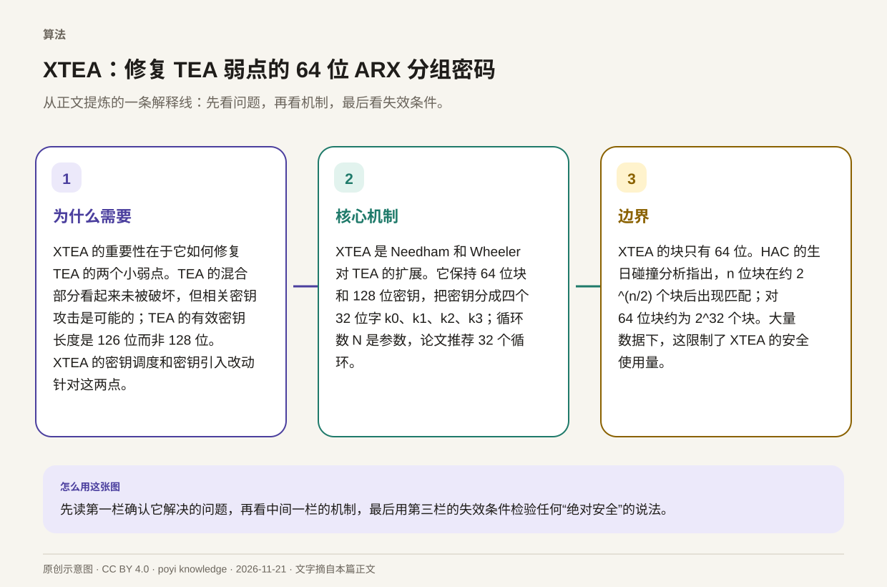
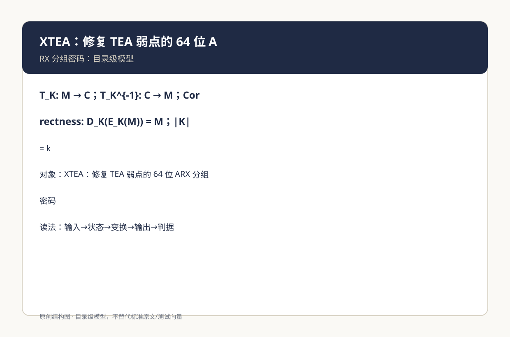

原理与机制
算法：XTEA 扩展 TEA（XTEA）。XTEA 是 Needham 和 Wheeler 对 TEA 的扩展。它保持 64 位块和 128 位密钥，把密钥分成四个 32 位字 k0、k1、k2、k3；循环数 N 是参数，论文推荐 32 个循环。每个循环更新 v0 和 v1 各一次，因此包含 64 次字更新，通常称为 64 轮。```text v0 += (((v1 << 4) ^ (v1 >> 5)) + v1) ^ (sum + key[sum & 3]) sum += delta v1 += (((v0 << 4) ^ (v0 >> 5)) + v0) ^ (sum + key[(sum >> 11) & 3])
其中 delta = 0x9e3779b9，sum 从 0 开始；所有加法都是 32 位模 2^32 加法，移位和异或也是 32 位操作。XTEA 没有独立的密钥扩展数组。它用 sum 的低两位选择 key[sum & 3]，第二次更新用 key[(sum >> 11) & 3]；移位 11 使选字序列不规则，并保证四个密钥字在前两个循环都被使用。这是 XTEA 与 TEA 的主要结构差异之一。解密从 sum = delta * N 开始，先逆 v1 更新，再减 delta，最后逆 v0 更新；N 必须与加密相同。轮函数只用加法、移位和异或，没有 S-box 或预计算查找表；密钥字只有四个，按 sum 的位索引访问。
为什么重要
XTEA 的重要性在于它如何修复 TEA 的两个小弱点。TEA 的混合部分看起来未被破坏，但相关密钥攻击是可能的；TEA 的有效密钥长度是 126 位而非 128 位。XTEA 的密钥调度和密钥引入改动针对这两点。论文称这些改动修复了弱点，同时保留几乎相同的简单性、很少的初始化、较多循环和不复杂分析的设计目标。这是设计声明，不是完整安全证明。32 个循环是论文推荐值；每个循环包含两次更新，所以通常称为 64 轮。XTEA 仍然使用 64 位块，生日碰撞边界约为 2^32 个块，处理大量数据时会限制安全使用量。本文判断它不是现代标准算法，适合作为历史和教学案例，不应默认用于新设计。
应用与实例
XTEA 面向小初始化、简单、多循环的软件实现；轮函数只用加法、移位和异或，没有 S-box 或预计算查找表，密钥字只有四个，按 sum 的位索引访问。它不定义工作模式；实际使用仍需 CBC、CTR 等模式，并需要独立的完整性保护。```text P = af20a390 547571aa K = 27f917b1 c1da8993 60e2acaa a6eb923d C = d26428af 0a202283
```text
P = 2e6c1fe7 f5571f9d
K = 62ee209f 069b7afc 376a8936 cdc9e923
C = 7a01cbc9 b03d6068
这两组向量来自 Crypto++ 的 XTEA/ECB 测试文件；该文件把来源标为 Keith Lockstone 的 TEA and XTEA 向量页。32 循环对应论文推荐值，64 循环用于验证循环数参数化，不是推荐值。

边界与攻击面
XTEA 的块只有 64 位。HAC 的生日碰撞分析指出，n 位块在约 2^(n/2) 个块后出现匹配；对 64 位块约为 2^32 个块。大量数据下，这限制了 XTEA 的安全使用量。### 相关密钥与设计声明
TEA 的相关密钥攻击和 126 位有效密钥问题促使 XTEA 修改密钥调度和密钥引入。论文说 TEA 的混合部分看起来未被破坏，但相关密钥攻击是可能的（在两个相关密钥下构造 2^32 个文本看起来并不实际）；126 位有效密钥主要影响某些应用，而不是简单加解密。论文称这些改动修复了两个弱点；这是设计目标，不是完整安全证明。本文不复述未引用的缩减轮攻击，也不把修复 TEA 弱点等同于 XTEA 对所有攻击安全。### 无完整性
XTEA 只定义分组密码，不提供完整性或认证。翻转密文会改变对应明文，但 XTEA 本身无法检测；需要认证时应使用 AEAD 或加密后再 MAC。本文的教学实现只演示 XTEA 的固定向量、32/64 循环加解密和一位差异统计。它不生成密钥、不做常量时间处理、不实现工作模式、协议、密钥管理或侧信道防护，不能用于生产环境。没有大 S-box 或预计算表减少了表查找侧信道，但实现仍是 JavaScript 非常量时间，也不等于侧信道安全。
历史与背景
Needham 和 Wheeler 的 TEA extensions 标注为 1996 年 10 月，1997 年 3 月修订、1997 年 10 月更正；XTEA 由此形成。它保留了 TEA 的 64 位块、128 位密钥和 ARX 风格，但改变了密钥调度和密钥引入。论文还把方法扩展到更大的 Block TEA 块；Block TEA 是另一个算法，不是 XTEA。1998 年的 Correction to xtea 说明对 Block TEA 的攻击有效，但不适用于原始 TEA 或 XTEA；通常称为 XXTEA/Corrected Block TEA 的是 Block TEA 的修正版，不是 XTEA。XTEA 与 TEA、Block TEA、XXTEA 都是各自独立的实体。
逐步示例与核验
复算示例
取标准或公开测试向量中的一组参数，按“输入—执行—输出”记录：先写出该条目的形式式 (C=E_K(P;r),\qquad P=D_K(C))；再按规范顺序执行每一步，最后把输出与独立实现或标准向量逐字节对照。若没有可引用的数值向量，就只记录结构步骤，不伪造输出。
参考出处
- Wikipedia search entry for XTEA 扩展 TEA. https://zh.wikipedia.org/w/index.php?search=XTEA%20%E6%89%A9%E5%B1%95%20TEA
- Handbook of Applied Cryptography (Menezes, van Oorschot, Vanstone). https://www.cacr.math.uwaterloo.ca/hac/